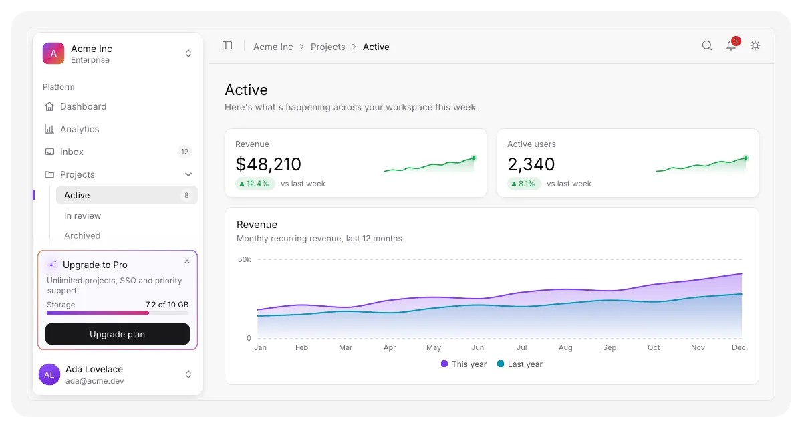

App Shell: Floating Sidebar
The sidebar is a floating rounded card with a soft shadow; content sits beside it.

Usage
Add glowkit next to eframe:
cargo add glowkit eframeThen draw it inside any egui Ui:
use glowkit::prelude::*;
use glowkit::templates::{AppShell, ShellLayout, NavSection};
AppShell::new(&mut route, &mut nav)
.layout(ShellLayout::Floating)
.show(ui, |ui, shell| page(ui, shell));Prefer to own the code? The glowkit CLI copies this component's source into your project, shadcn-style:
cargo install glowkit-cli
glowkit add shell-floatingEquivalent to
If you know this pattern from shadcn/ui, App Shell: Floating Sidebar is the Rust version: an original egui implementation, not a port, that runs natively and in WebAssembly.
- Sidebar floating (sidebar-08)shadcn/ui
About App Shell: Floating Sidebar
App Shell: Floating Sidebar is one of 9 components in glowkit's Dashboards & Shells category. It lives in the glowkit-templates crate, enabled by the templates feature of glowkit (on by default). It reads its colors from the active glowkit theme, so it matches the rest of your app in light, dark or a custom brand theme, and every color, size and timing has a setter to override it.
App shells to build dashboards and tools on: sidebar, inset, floating, rail, dual-pane, top-nav, inspector and bottom-nav layouts that collapse and animate.